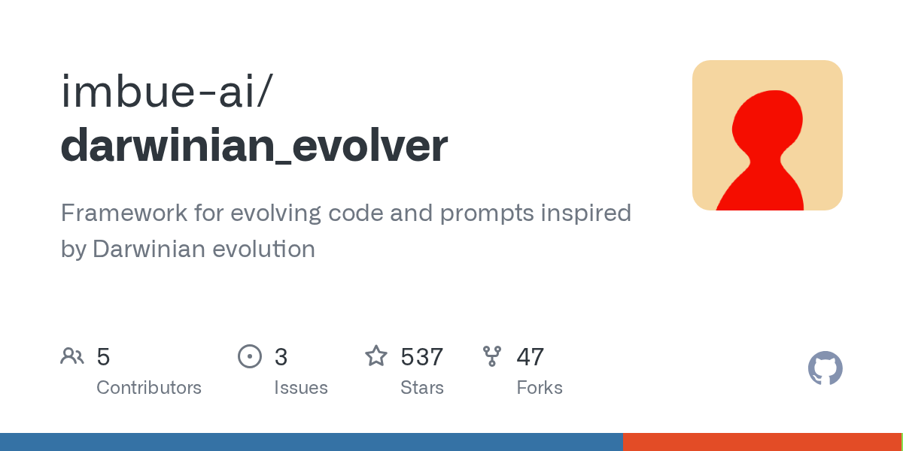
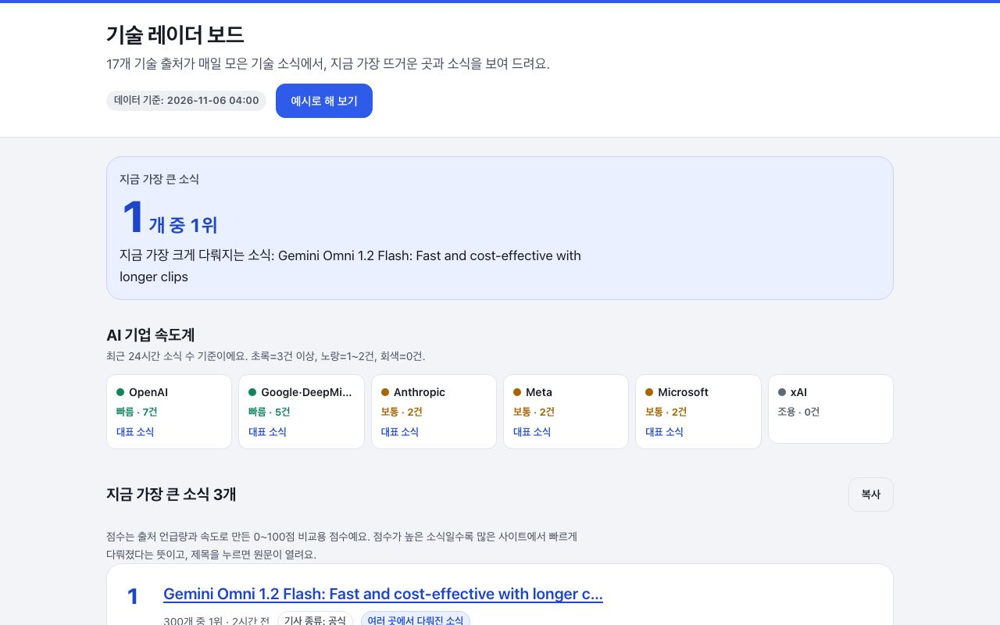

하루 한 모금,
오늘의 기술 소식
화제가 된 오픈소스와 AI 도구를 직접 받아서 돌려 보고, 1분 쇼츠와 글로 남깁니다. 모든 숫자에는 원문 근거를 답니다.

reflota: 디스크에서 지운 파일 복구하는 오픈소스, 설치 없이 직접 돌려 봤다
하루 새 GitHub에서 생긴 파일 복구 도구 reflota를 받아, 설치도·인터넷도 없이 테스트만 돌려 본 기록. FAT 계열은 실제로 복구까지 확인했고, NTFS는 검증하지 못했으니 그 점만 유의하면 된다.
글 읽기 →최근 글
전체 보기 →
프롬프트를 다윈 진화로 자동 고쳐주는 오픈소스, 설치 없이 받아서 돌려 봤다
imbue-ai/darwinianevolver는 다윈 진화 아이디어를 코드로 옮긴 가벼운 오픈소스다. 프롬프트가 실패한 사례를 LLM에게 보여 주고 고쳐 쓰게 한 뒤, 점수가 더 좋은 쪽을 남기는 방식이다. 저장소를 내려받아 설치 없이 코드를 읽었고, 내 로컬 모델로 …
8GB만으로 로컬 AI 회의록? 오픈소스 Yogurt 설치 없이 코드 직접 돌린 기록
Yogurt는 회의 앱에 봇을 넣지 않아도 마이크와 시스템 소리를 녹음해 전사하고, 요약·담당자·다음 단계·리마인더까지 로컬에서 만들어 주는 무료 오픈소스 앱이다. 이 글은 앱을 설치해 쓴 기록이 아니다. 저장소를 받아 코드를 읽고, 설치 없이 돌릴 수 있는 부분만 실…
Gemini가 개인 파일을 사람 리뷰어한테 보낸다고? 받아서 직접 확인해 봤다
Google이 "개인 콘텐츠는 사람이 안 본다"고 약속했던 Gemini의 연결 앱 정책이 뒤집혔다는 1인 문서가 GitHub에 올라왔다. 나는 이 저장소를 받아 설치 없이, 인터넷도 없이 코드만 살펴보고 실제로 해 볼 수 있는 것까지만 확인했다. 이 글은 그 기록이다.
rea-video: 영상 받아서 돌려보니 — 핵심 분해까지 통째로 동작했다
임의의 영상을 받아 샷 단위로 쪼개고, "실사였나, AI 생성이었나, 코드로 그렸나"를 메타데이터·프레임 분석으로 판단해 리포트로 만들어 주는 오픈소스 CLI 도구다. 이번엔 이 맥의 격리 폴더 안에 venv로 설치해 핵심 분해(decompose)를 실제로 돌려 봤다.…
284B 모델을 64GB RAM에 GPU 없이 돌리는 CPU 추론 키트, 받아서 직접 살펴본 기록
284B MoE 모델을 64GB 램에, 30B MoE를 16–32GB 램에 GPU 없이 돌리자는 llama.cpp 패치 + 양자화 키트(llama-modchip)를 받아서, 설치 없이 코드를 읽고 돌려 볼 수 있는 범위까지 살펴봤다. 결론부터 말하면 이 키트가 힘을 쓰…
앱 실험실
앱 18개 전체 보기 →
기술 레이더 보드
17개 기술 출처가 매일 수집한 기술 소식 데이터를 받아, 지금 가장 큰 소식 3개와 점수·최신순 소식 목록을 대시보드에서 보여주는 앱입니다.
앱 써 보기 →26개 모델
맥에서 직접 잰 로컬 AI
내 맥에서 어떤 AI 모델이 돌아갈까? 48GB 맥에서 인기 로컬 모델 26개를 직접 돌려 답 쓰는 속도·메모리·한국어 점수·도구 호출·코딩을 쟀습니다. 같은 기준으로 비교할 수 있게 정리했어요.
실측표 보기 →커밋 한 모금
기술 소식. 오늘 뜨는 오픈소스·AI 모델을 1분 안에. 원문 화면과 직접 돌려 본 결과까지.
영상 보기 →실험 한입
생활 실험. 궁금한 걸 AI 3개한테 물어보고, 정답은 공개 데이터로 직접 계산해 확인합니다.
영상 보기 →